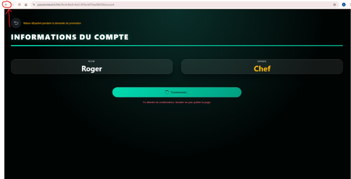
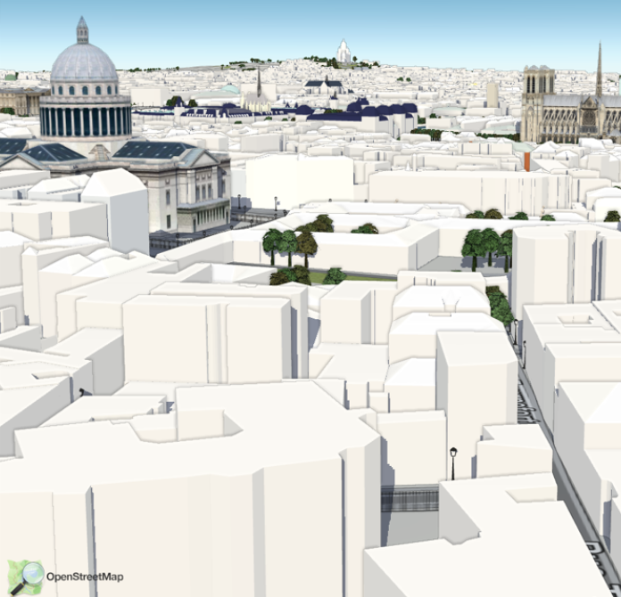

Portfolio Ahmed Kaddouri
PROBLÉMATIQUE 1 ??
Description du challenge
On devait réussir a obtenir le grade chef sur un jeu afin d’obtenir le code secret.
Étapes de résolution :
Une fois qu’on envoyait une demande pour obtenir le garde il y avait un temps d’attente de 5 secondes durant lequel le garde est affiché puis il se retirait.Pour cela on devait profiter de cette intervalles de 5 secondes pour revenir à la page précédente et cela nous permettait de garder le grade .

image ilustrant la démarche
Mes difficultés recontrée :
Au début c’est pas évident a trouver car il y a de nombreux boutons sur le site et cela nous fait croire que la solution se trouve ici alors qu’elle ne se trouve pas dans le site en lui meme.
ce que j' ai appris :
Le fait de retourner à la page précédente permet de garder certains attributs sur le site.
Pour le grand oral
Je peux présenter ma démarche de résolution du challenge, en expliquant comment j'ai décodé les nombres en ASCII et comment j'ai trouvé le FLAG.
PROBLÉMATIQUE 2 ??
Description du challenge
On avait une capture d’écran d’une ville avec une sorte de monument et à l' aide de ce monument on pouvait obtenir la clé.
Étapes de résolution :
J’ai fait une capture de la photo que j’ai transférée sur google image et le moteur de recherche à trouver facilement le monument.

image issue du site, passe ton hack (capture d'écran)
Mes difficultés recontrée :
Je n’ai pas rencontré de problèmes majeurs.
ce que j' ai appris :
La fonctionnalité google image permet de retrouver de nombreuse chose tant qu’elles sont connues et distingables.
Pour le grand oral
Je peux mettre en rapport la resolution du challenge avec les notions de sécurité informatique, notamment la manipulation des requêtes HTTP et l'identification des failles dans les systèmes backend.
PROBLÉMATIQUE 3 - Des messages cachés peuvent être cachés dans les images ?
Description du challenge
On devait trouver la clé à l'aide des caractères de l'image
Étapes de résolution :
Je ne me souviens plus de quel paramètre il fallait comparer un certain paramètre sur les deux images qui paraissent identiques afin de trouver la clé.
image à comparer
Mes difficultés recontrée :
Au début je ne voyais pas la différence avec les deux images et j’ai mis du temps afin de comprendre qu’il fallait aller dans les informations interne de l'image.
ce que j' ai appris :
Une image est composée de nombreux caractères qui peuvent différencier deux images qui peuvent paraître identiques.
Pour le grand oral
repondre à la question : Des messages cachés peuvent être cachés dans les images.